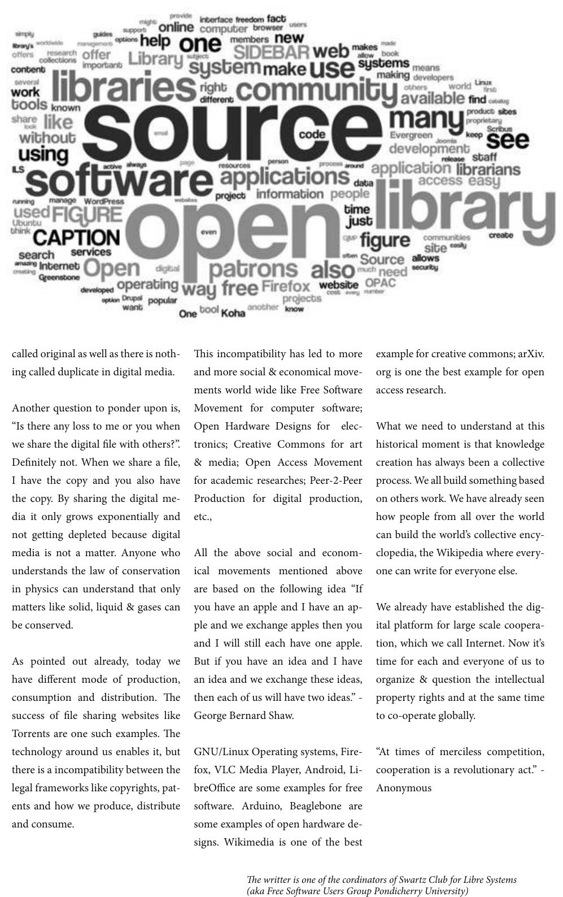

called original as well as there is noth-
ing called duplicate in digital media.
Another question to ponder upon is,
“Is there any loss to me or you when
we share the digital le with others?”.
Denitely not. When we share a le,
I have the copy and you also have
the copy. By sharing the digital me-
dia it only grows exponentially and
not getting depleted because digital
media is not a matter. Anyone who
understands the law of conservation
in physics can understand that only
matters like solid, liquid & gases can
be conserved.
As pointed out already, today we
have dierent mode of production,
consumption and distribution. e
success of le sharing websites like
Torrents are one such examples. e
technology around us enables it, but
there is a incompatibility between the
legal frameworks like copyrights, pat-
ents and how we produce, distribute
and consume.
is incompatibility has led to more
and more social & economical move-
ments world wide like Free Soware
Movement for computer soware;
Open Hardware Designs for elec-
tronics; Creative Commons for art
& media; Open Access Movement
for academic researches; Peer-2-Peer
Production for digital production,
etc.,
All the above social and econom-
ical movements mentioned above
are based on the following idea “If
you have an apple and I have an ap-
ple and we exchange apples then you
and I will still each have one apple.
But if you have an idea and I have
an idea and we exchange these ideas,
then each of us will have two ideas.” -
George Bernard Shaw.
GNU/Linux Operating systems, Fire-
fox, VLC Media Player, Android, Li-
breOce are some examples for free
soware. Arduino, Beaglebone are
some examples of open hardware de-
signs. Wikimedia is one of the best
example for creative commons; arXiv.
org is one the best example for open
access research.
What we need to understand at this
historical moment is that knowledge
creation has always been a collective
process. We all build something based
on others work. We have already seen
how people from all over the world
can build the world’s collective ency-
clopedia, the Wikipedia where every-
one can write for everyone else.
We already have established the dig-
ital platform for large scale coopera-
tion, which we call Internet. Now it’s
time for each and everyone of us to
organize & question the intellectual
property rights and at the same time
to co-operate globally.
“At times of merciless competition,
cooperation is a revolutionary act.” -
Anonymous
e writter is one of the cordinators of Swartz Club for Libre Systems
(aka Free Soware Users Group Pondicherry University)